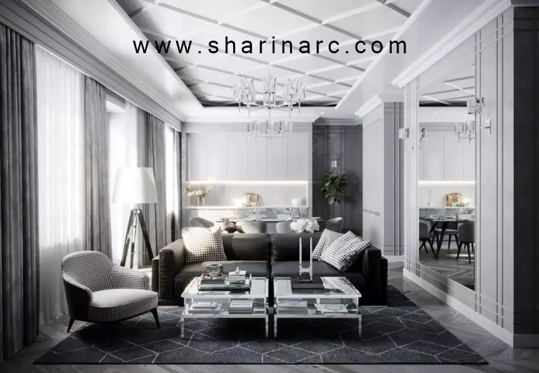
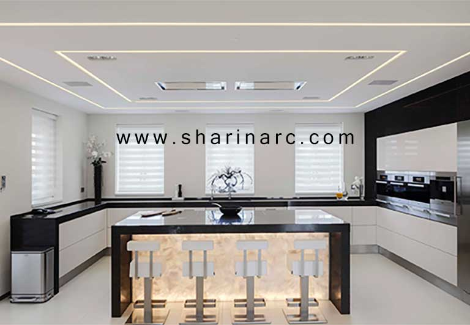

.jpg)
خدمات
کناف
کفپوش
کناف
کاغذ دیواری
پارتیشن
محوطه سازی
غرفه نمایشگاهی
بازسازی
طراحی نما
دکوراسیون داخلی
مشارکت در ساخت
شقف کاذب
پانل کناف RG یا صفحات روکش دار گچی معمولی صفحات ساده RG که به عنوان پانل روکش دار گچی معمولی نیز شناخته می شوند دارای روکش کرم رنگ می باشد و در محیط های خشک و بدون خطر آتش سوزی مورد استفاده قرار می گیرند. سقف های کاذب ، پارتیشن ها ، دیوارهای جداکننده و پوششی عموما با این نوع ساخته می شوند و یکی از پرکاربردترین انواع پانل های گچی می باشد. پانل کناف ضد آب و رطوبت یا صفحات MR صفحات MR ، صفحاتی مقاوم در برابر رطوبت هستند که اشتباها با نام کناف ضد آب نیز شناخته می شوند در صورتی این صفحات ضد آب نیستند و تنها در برابر رطوبت مقاوم هستند. روکش پانل MR از ترکیب گچ با موادی که نسبت به آب و رطوبت مقاوم هستند تشکیل شده است و بیشتر برای محیط های مرطوب مانند کناف سقف آشپزخانه ها و سقف سرویس بهداشتی و حمام مورد ستفاده قرار می گیرد. پانل کناف ضد حریق و حرارتی یا صفحات FR کناف ضد حریق یا عایق حرارتی ، صفحات FR هستند که روکش آن ها علاوه بر گچ ، حاوی الیاف فایبرگلاس یا شیشه است. الیاف موجود در روکش آن ها موجب مقاومتشان در برابر آتش و حرارت می گردد. صفحات FR به دلیل داشتن مقاومت نسبت به حریق بیشتر در دیوارهای جداکننده، پوشش دیوارهای سنتی، سقف کاذب و پوشش ستون ها و تیرهای فلزی و بتنی استفاده می شود. پانل مقاوم در برابر آتش و رطوبت یا صفحات FM صفحات FM ، صفحات روکش داری هستند که گچ آن ها حاوی الیاف فایبرگلاس و مواد مقاوم در برابر رطوبت می باشد. از این رو همزمان خصوصیات صفحات FR ( ضد حریق ) و صفحات MR ( ضد رطوبت ) را دارا می باشد. از این پانل ها در محیط هایی که لازم است در برابر آتش و رطوبت حفاظت شوند استفاده می گردد.
دیوار کناف نوعی دیوار کاذب یا دیوار غیر باربری است که برای تقسیم و جداسازی فضاهای داخلی ساختمان ها مورد استفاده قرار می گیرند. دیوار کناف دارای یک قاب سبک هستند که لایه های صفحات کناف روی انها پیچ شده اند. در واقع دیوارهای کناف از مقاطع فلزی شامل استاد و رانر ، صفحات روکش دار گچی یا سیمانی ، عوامل اتصال پیچ ها و مهارها ، مصالح درزگیری بتونه و ماستیک و عایقهای صوتی و حرارتی ساخته می شوند. دیوار کناف از استاد و رانر، پانل های گچی، بتونه یکی از بیشترین موارد استفاده از کناف در دکوراسیون داخلی ، کناف دیوار پشت تلویزیون است. به دلیل خصوصیات و مزایای کناف مثل قابلیت ایجاد منحنی ، راحتی در ایجاد هر طرح و مدلی بدون محدودیت ، قابلیت ایجاد نورپردازی زیبا ، داشتن هماهنگی و هارمونی با متریال های دیگر ، اجرای سریع و راحت از کناف برای دیوار پشت tv استفاده می شود. در سایت شارین آرک شما می توانید انواع مدل ها و جدیدترین طرح کناف دیوار تلویزیون را ببینید. و ماستیک، وسایل اتصال و عایق های صوتی و حرارتی از اجزای تشکیل دهنده دیوار کناف می باشد.
سقف کاذب کناف نوعی سقف کاذب است که در آن سازه ی فلزی شامل پروفیل های سرد نورد شده ی نبشی تراز و سپری را به وسیله ی آویز به سقف متصل می شود و سپس پانل ها بر روی سازه فلزی نصب می گردد. نبشی تراز برای تعیین تراز سقف و در فاصله مشترک بین دیوار و سقف، سپری به جهت زیرسازی و مشخص کردن اتصال دقیق سازه ها و محل اتصال آویز ها استفاده می شود. آویزها در انواع مختلفی برای سقف کناف استفاده می شود که پرکاربرد ترین آن ها آویز مفتول گالوانیزه است. همچنین برای ثابت نگه داشتن تایل ها از گیره تایل استفاده می شود.
کناف کاری سقف پذیرایی به دلیل تنوع بسیار زیاد در طرح ها و مدل های کناف پذیرایی ، هماهنگی با انواع سبک های دکوراسیون ، قابلیت نورپردازی منحصر به فرد ، هزینه کمتر و نصب راحت تر بسیار متداول و پرطرفدار است که مانند بسیاری از روش های طراحی از اصول خاص خود پیروی می کند و یکی از مهمترین آنها نوع و شرایط فضایی است که قصد اجرای آن را داریم. در طراحی دکور اتاق نشیمن یا سالن پذیرایی مدرن و کلاسیک می توان به جای گچ بری سقف و صرف هزینه و زمان بیشتر از انواع کناف ساده و طرح دار استفاده کرد. برای طراحی و اجرای انواع کناف سقف پذیرایی گرد ، مستطیلی جدید ، مربع و … می توانید با شارین آرک از طریق شماره ۹۱۰۰۷۰۰۵_۰۲۱ در ارتباط باشید و از مشاوره رایگان این مجموعه بهره مند شوید.
کناف کاری آشپزخانه به دلیل تاثیر شگرفی که دکوراسیون آشپزخانه بر زیبایی هر خانه ای می گذارد بسیار پر اهمیت است و از ایده های نسبتا نو در آشپزخانه های کلاسیک و مدرن می باشد که هر روزه محبوبیت آن در بین افراد علاقه مند به دکوراسیون داخلی افزایش می یابد. این نوع سقف کاذب این امکان را به شما میدهد تا سقف آشپزخانه را دقیقا به دلخواهتان طراحی کنید. کناف کاری منحنی، دایرهای، مستطیلی یا اشکال مختلفی که با توجه به فرم آشپزخانه قابل طراحی هستند. همچنین با کناف کاری در آشپزخانه می توانید نور پردازی قوی تری داشته و جلوه متفاوت و دکوراتیوی را در فضای آشپزخانه ایجاد کنید. انتخاب طرح کناف آشپزخانه انتخاب مهمی است که بهتر است در این خصوص با طراحان حرفه ای و متخصص مشورت کرده و از راهنمایی های آن ها بهره مند شوید.
کناف اتاق خواب باید با توجه به سبک دکوراسیون اتاق، رده ی سنی و روحیه ی فردی که اتاق خواب متعلق به اوست و متراژ اتاق خواب انتخاب گردد. اجرای دیوار کناف در اتاق خواب نیز بسیار مورد استقبال طراحان دکوراسیون داخلی و همچنین افراد ساکن در منزل است چرا که جلوه ای خاص و متمایز به اتاق می بخشد و می توان برای دیوارهایی که سرتختی به آن تکیه داده می شود، استفاده کرد. در گذشته کناف وسط سقف اتاق اجرا می شد اما در سالهای اخیر سقف بالای تخت خواب برای این منظور مورد استفاده قرار می گیرد و با نور پردازی زیبا علاوه بر جلوه ی بصری، پتانسیل کاربردی آن نیز نمایان می شود.
همانطور که اشاره شد استفاده از صفحات گچی پیش ساخته کناف مزایای زیادی دارد که این موجب استفاده و کاربرد گسترده آن در صنعت ساختمان و ساخت و ساز دارد . در این قسمت به این موارد اشاره کرده و به جزییات آن می پردازیم : سبکی این نوع دیوارها و سقف ها و کاهش بار مرده ساختمان : یکی از اهداف مهندسین عمران تلاش برای کاهش بار مرده ساختمان و سبک بودن سازه است و صفحات گچی پیش ساخته به دلیل سبک بودن جنس مصالح ، این امکان را فراهم می کند. دیوار های کناف در مقابل دیوارهای بنایی ۱۰ تا ۱۵ برابر سبک تر هستند و با کاهش بار مرده ساختمان اثر مخرب کمتری در هنگام زلزله نسبت به دیوار بنایی دارند . حمل آسان و راحت : به دلیل وزن کمتر این صفحات و حجم کمتر آن نسبت به مصالح دیوارهای بنایی ، حمل و نقل آن ها راحت تر است به خصوص برای مسافت های طولانی و در نتیجه هزینه حمل پایین تر می آید. سرعت و کیفیت بالا در اجرا : همانطور که گفته شد این صفحات پیش ساخته هستند و پس از اجرا نیازی به صرف زمان برای خشک شدن گچ نیست . این امر سرعت اجرا را بالا می برد و همینطور کیفیت اجرا را بهبود می بخشد و چه در فصل سرد و چه در فصل گرم کیفیت کار یکسان است ، چرا که مانند گچ کاری نیست که در فصول سرد نیاز به محیطی گرم برای خشک شدن دارد تا از طبله شدن و جدا شدن آن جلوگیری شود . در کل مشکلات مربوط به گچ کاری مانند طبله کردن و یا ترک خوردن در آن وجود ندارد. عایق حرارتی و صوتی : دیوارها و سقف ها می توانند از پانل هایی که عایق حرارت و صدا هستند ساخته شوند و این نکته برتری نسبت به دیگر دیوارها و سقف ها ایجاد می کند. با استفاده از عایق های پشم شیشه و پلی استایرن می توان این دیوار ها را عایق کرد به نحوی که می توان آن ها را بین دو دیوار قرار داد. ایجاد دسترسی راحت و آسان به تاسیسات الکتریکی و مکانیکی : در این نوع سقف ها و دیوار ها می توان به راحتی به تاسیسات مکانیکی و الکتریکی برای تعمیر یا تعویض دسترسی داشت . در صورت ایجاد خرابی در سیستم برق و یا لوله کشی می توان به راحتی قسمت آسیب دیده را تشخیص داد و عملیات تخریب آن بسیار راحت تر و سریع تر است همچنین بعد از اتمام کار می توان به راحتی آن قسمت را بازسازی کرد .
با توجه به توضیحات داده شده کناف گزینه مناسبی برای جایگزینی با سقف رابیتس می باشد که از نظر هزینه ، راحتی در اجرا و سرعت اجرا نسبت به رابیتس برتری دارد. همچنین تایل های کناف در انواع مختلفی در بازار موجود می باشد که در هر پروژه بنابر نیاز از نوع خاص آن استفاده می شود. برای انتخاب بهترین نوع تایل و زیباترین طرح همچنین اجرای زیبا و تمیز به شارین آرک اعتماد کنید. شرکت شارین آرک با داشتن عاملیت فروش کناف ایران و داشتن تیم حرفه ای و مجرب که از اولین های ایران در این زمینه است به شما برای اعتماد بیشتر کمک می کند. شما می توانید با شماره تلفن ۰۹۱۲۱۰۰۶۹۲۴ برای دریافت مشاوره و اطلاعات بیشتر در خصوص قیمت و نحوه ی اجرا تماس بگیرید.